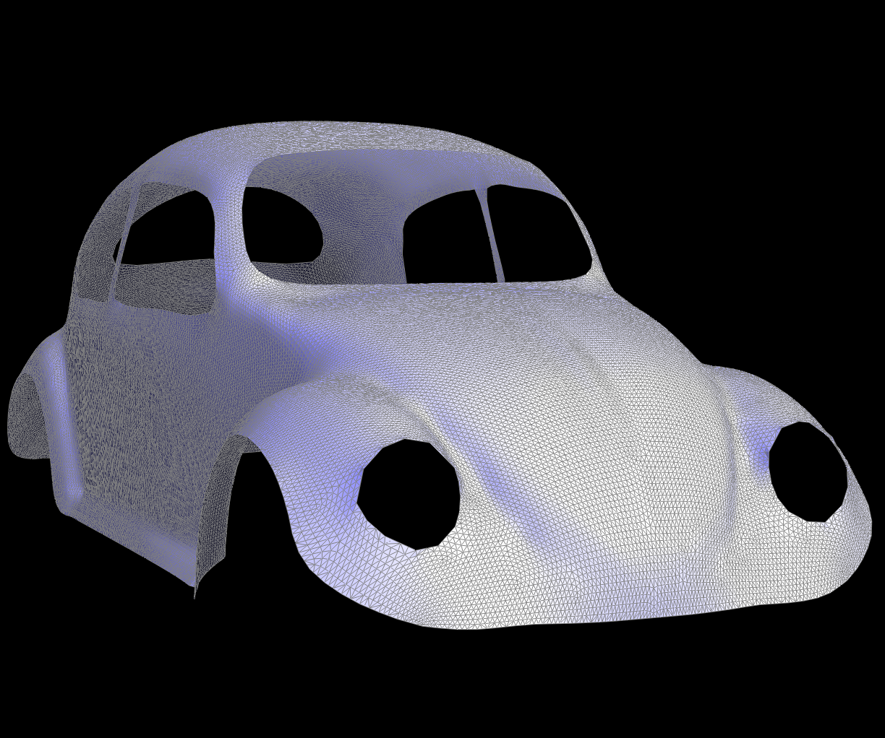

Overview
In this homework we implemented curves and subdivision in 2D, up to 3D mesh subdivision. Now we can view and render smooth meshes, which is the advancement that made animations like Gery's Game possible!
Section I: Bezier Curves and Surfaces
Part 1: Bezier Curves with 1D de Casteljau Subdivision
Briefly explain de Casteljau's algorithm and how you implemented it in order to evaluate Bezier curves.De Casteljau's algorithm is a simple recursive method for evaluating Bezier curves. Given a Bezier curve with $N$ control points and some desired parameter $t \in [0, 1]$ on the curve, we can map each "segment" (i.e. pair of consecutive control points) into a new point by traveling $t$ of the way from the first control point to the second. This can be easily computed as a weighted average, and leaves us with a set of $N-1$ points. It turns out that these points form a new Bezier curve that coincides exactly with the old one, so we can simply repeat the process until we have only one point left. This point is the value of the Bezier curve at the parameter $t$.
We picked a Bezier curve of six points. Shown is a progression of the algorithm:
 |
 |
 |
 |
 |
 |

Here's a slightly different curve evaluated at a different parameter:

Part 2: Bezier Surfaces with Separable 1D de Casteljau
Briefly explain how de Casteljau algorithm extends to Bezier surfaces and how you implemented it in order to evaluate Bezier surfaces.Bezier surfaces are specified by a grid of N by M control points. The de Casteljau algorithm can be extended to evaluate not only Bezier curves, but Bezier surfaces as well. By applying the algorithm to each row, we obtain a new set of control points. We can then apply the algorithm to these new control points to obtain the value of the Bezier surface at the desired parameter. Turns out, the algorithm works the same whether we evaluate rows first or columns first.
Here is a picture of the teapot being rendered:

Section II: Triangle Meshes and Half-Edge Data Structure
Part 3: Area-Weighted Vertex Normals
Briefly explain how you implemented the area-weighted vertex normals.Implementing the area-weighted vertex normals was fairly straightforward, since
Face::normal() was already provided to us. The most complex thing we had to do
was to figure out how to compute the area of a triangle. We used the formula
$A = \frac{\lVert \mathbf{AB} \times \mathbf{AC} \rVert}{2}$, which we
implemented in C++ using the provided cross and norm utilities.
From there, we iterated through each edge connected to the vertex by repeatedly
taking twin()->next(), multiplying the result of our area utility function as
well as the provided Face::normal() function, and summing the results. We then
normalized the sum and returned it.
Here is a picture of the teapot without the normals used:

And here is a picture of the teapot with the normals used:

Part 4: Edge Flip
Briefly explain how you implemented the edge flip operation and describe any interesting implementation / debugging tricks you have used.Implementing the edge flip was a bit more challenging. At first, it seemed like it would be a lot of work to keep track of all the pointers and make sure everything was consistent. However, after rethinking about the problem in terms of "what are the new triangles", we settled on the following:
For a given edge ha and its twin hb shown above (edges labeled at their
starting vertex), if we shorten ->next() to .N, the new triangles should be
the following:
ha→hb.NN→ha.Nhb→ha.NN→hb.N
We can set the next and face pointers accordingly. Furthermore, the vertex
of ha should be updated to that of ha.N.N and the vertex of hb should be
updated to that of hb.N.N.
Lastly, we had to make sure that all the pointers pointing back to each halfedge were updated as well. This was a bit tricky to approach at first, but we avoided having to think too hard about exactly what changed by simply updating every single pointer.
Here's some screenshots of edge flips!
 |
With careful planning, a potentially frustrating debugging journey was thankfully avoided 🙂
Part 5: Edge Split
Once again, by drawing out a diagram and breaking down the steps beforehand,
implementing edge split was fairly straightforward.
We call the halfedges associated with the edge to be split ha and hb. A new vertex is
created at the midpoint of the edge being split, and the vertices and new faces created by this
operation are assigned.
EC: We also implemented edge split for boundary edges.
If both half-edges of the edge are boundary edges, then there is no splitting to be done.
In the case that one of ha or hb is a boundary, then we add a new vertex and create only
one new triangle face instead of two additional faces from having vertices on either side.
| Before split | After split | |
|---|---|---|
| Sketch |  |
 |
| Simple mesh | ||
| Splits and flips |  |
|
| EC: Boundary split |  |
 |
Part 6: Loop Subdivision for Mesh Upsampling
We followed the suggested steps of first computing all the new positions for
vertices and edges and storing them in the newPosition variable. Next to split
the edges, we create reference to all the original edges to ensure we don't loop
indefinitely, and splitEdge() these edges. We had to modify splitEdge()
slightly since the original implementation was correct but inconsistent since it
moved the original edges, so we had to swap the original edges back to their
positions. This was a tricky one to debug but we were able to observe what was
happening by viewing the teapot mesh which has more regular/flat edges to begin
with. Then, we flip the edges connecting an old and new vertex, and finally copy
the vertices' stored newPositions into position
The loop subdivision on its own can still result in some "sharp" corners if the
original mesh had a sharp corner or vertices with a high index. The provided
cube.dae for example does not have regular vertex degrees, resulting in a
slightly pointy pillow-like cuboid (left). If we first manually preprocess the
cube and regularize vertex degrees by flipping edges, then we can obtain a
rounder shape.
Extra Credit: Boundary support
We also implemented boundary checks such that boundary edges are preserved and not moved or smoothed. See beetle below. Boundary vertices do not move, and boundary edges are split in the middle instead of using the Loop formula.
| Cube | Preprocessed cube | Beetle boundary case |
|---|---|---|
 |
 |
 |
 |
||
 |
||
 |
 | |
 |
 |
|
 |
Extra Credit: $\sqrt{3}$ subdivision
We also implemented the $\sqrt{3}$ subdivision scheme. The main difference is that each triangle get split into three new triangles, instead of four, so there is a different splitting and smoothing formula.
First, we had to implement "face splitting". Instead of splitting an edge, forming two new edges, we can split a face, forming three new edges, by adding a new vertex at the midpoint of the face. Then, we can draw edges to the existing vertices of the triangle. See this example below:
After splitting every face, we're now left with some irregularly shaped triangles — the next step is to flip each original edge so that the triangles are regular-sized again. This leaves us with three times the number of old triangles, but slightly finer grained.
Lastly, we had to implement the $\sqrt{3}$ smoothing formula. The new vertices are already placed at the averages of the neighboring vertices, so we just had to adjust the old vertices. This is accomplished using the formula
$\alpha_n = \frac{4 - 2 \cos(2 \pi / n)}{9} \quad S(p) = (1 - \alpha_n) p + \alpha_n \frac{1}{n} \sum_{i=0}^{n-1} p_i$
where $p$ is the old vertex, $p_i$ are the neighboring vertices, and $n$ is the degree of the vertex. We implemented this in C++ and applied it to the vertices.
Now, we had a working $\sqrt{3}$ subdivision scheme! In our program, you can
press L to use the Loop subdivision, or press M to use the $\sqrt{3}$
subdivision. Here are some comparisons between the existing Loop subdivision
scheme and the new $\sqrt{3}$ scheme:
The Loop subdivision scheme is on the left, and the $\sqrt{3}$ scheme is on the right. The $\sqrt{3}$ scheme produces less triangles, so it might be more desirable for complex models.
Part 7 (Optional, Possible Extra Credit)
Save your best polygon mesh as partsevenmodel.dae in your docs folder and show us a screenshot of the mesh in your write-up.TBD
Include a series of screenshots showing your original mesh and your mesh after one and two rounds of subdivision. If you have used custom shaders, include screenshots of your mesh with those shaders applied as well.
TBD
Describe what you have done to enhance your mesh beyond the simple humanoid mesh described in the tutorial.
TBD